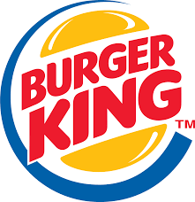
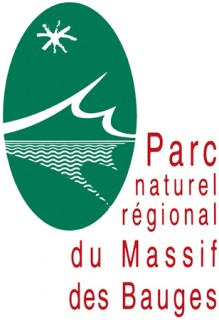

Teddy RUPPIN (23 ans)
Permis de conduire - FRANCE
DEVELOPPEUR JAVA FULL STACK
Après 1 ans au sein de la restauration rapide en même temps qu'une 3ème année de licence en informatique, il a souhaite acquérir une certification en java Full Stack et est donc en formation en tant que développeur JAVA Full Stack au sein de DTA Ingénierie. Il est travailleur, autonome et il sait travailler en équipe. Il cherche à présent à mettre ses nouvelles compétences dans le domaine ainsi que d'en acquérir de nouvelles au seins d'une équipe ouverte et soudée.
Compétences
Langage de programmation
- java ***--
- C++ **---
- python *-----
Developpement Web
- javascript ***--
- css ***--
- html ***--
- http ***--
- web responsive ***--
Frameworks
- bootstrap ***--
- jpa/jdbc ***--
- hibernate ***--
- angular 7 ***--
- spring ***--
Outils
- maven ***--
- git ***--
Base de données
- MySQL ***--
Méthodologie
- agile-scrum ***--
- cycle en V ***--
Environnement de développement
- eclipse ***--
- notepad++ ***--
- visualcode **---
Système d'exploitation
- windows ***--
- linux **---
Langues
- Anglais ****-
- Allemand **---
Formations
Septembre 2014 à juillet 2019: Licence informatique universite savoie mont blanc Formation général dans la programmation informatique ( java, algorithmique, base de donnée, réseau, ...)
Septembre 2011 à juillet 2014: Bac Scientifique Lycée du Granier
Novembre 2019 à Fevrier 2020: Formation Java Full Stack chez Diginamic. Formation en Java, framework associé (Spring, AngularJS, Hibernate, Bootstrap), utilisation d'outils (Maven, Git) et en méthodologie Agile, le tout sur des IDE (eclipse, notepad++, visualcode)
Expériences
 Equipier Polyvalent
Burger King Grésy-sur-Aix - Septembre 2018 à Novembre 2019
Contexte
Travail étudiant en CDI en contrat 20h pendant ma licence à l'université de Savoie Mont Blanc
Missions
- Préparateur de commande
- Cuisinier
Résultats
- Relation Client
- Sens du service
- Gestion du temps
- Rigueur
 Projet étudiant
Parc Naturel Régional du Massif des BAUGES - Janvier 2018 à Juin 2018
Contexte
Travail étudiant en CDI en contrat 20h pendant ma licence à l'université de Savoie Mont Blanc
Missions
- Organisation du projet (agile)
- Mise en place du Front de l'application pour tablette
Résultats
- Application fonctionnelle Client
Environnement technique
- html 5
- css 3
Loisirs
Sport
- Airsoft pratiqué en association (loi 1901)
- Tennis niveau régional
- Course à pied